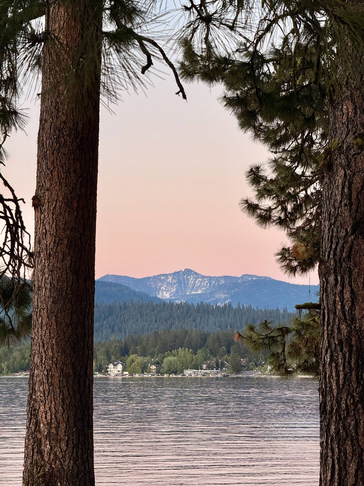

McCall is a small mountain town on the southern shore of Payette Lake, sitting at 5,026 feet about 107 miles north of Boise. What makes it special is the proximity to wild spaces — whether you want a completely laidback lake weekend or something more active, both are fully possible here.
The town has a natural identity shift by season: summer turns it into a beach town with swimming, kayaking, and fishing on glacially-carved Payette Lake, and winter transforms it into a ski destination with multiple mountains within 30 minutes. It's genuine four-season Idaho — casual, outdoorsy, and unpretentious.
Best time to visit: Summer (June–August) for lake life and long days; late January–early February for the Winter Carnival and peak ski season; fall for fewer crowds.
Recommended stay: 3–4 nights minimum; 5–6 nights for a full active itinerary.
The walkable core of town along Lake Street and N. 3rd. Restaurants, breweries, Legacy Park beach access, and the historic train depot (home to Salmon River Brewery).
About a mile west of downtown on the lake's south shore. This is where we're staying at The Oneys Cabin. Quieter and more resort-feeling, with Shore Lodge's restaurants and spa anchoring the area. Rotary Park is conveniently located right across the street — a beautiful spot to take a dip and take in the views.
A beautiful spot 1.5 miles north of downtown on a peninsula jutting into Payette Lake. A great place for hiking, biking, swimming, and a beach picnic. Don't forget to drive to The Narrows Overlook for the best views of the lake.
About 10 minutes southeast of town. Home to Jug Mountain Ranch golf course and Nordic ski trails. Quiet residential feel.
20 minutes south on HWY 55. A separate ski resort village worth a day trip in winter for skiing and in summer for golf at Osprey Meadows.
A 1,000-acre peninsula jutting into Payette Lake just 1.5 miles from downtown. Year-round hiking and biking trails, beach access, and sweeping views from Osprey Cliff Overlook.
Free public beach access right in the heart of downtown. Splash fountain, picnic areas, and walking paths connecting to Ponderosa State Park. Easy activity for all ages, all seasons — and the main hub for both the 4th of July Lakeside Liberty Fest and Winter Carnival events.
The centerpiece of McCall — 5,330 acres of glacially-carved water perfect for swimming, sailing, kayaking, canoeing, paddleboarding, and fishing. Popular beaches include North Beach and Legacy Park right downtown. Lake is cold even in August (glacier-fed), so bring a wetsuit for extended water time.
90-minute daytime cruises most afternoons at 1pm — great for families. 2-hour Sunset and Cocktail Cruises at 7pm and Thursday evening adult-only cocktail cruises with live music. Book ahead in peak season.
In summer, Brundage transforms into an adventure hub with scenic chairlift rides to the 7,800-foot summit, guided mountain bike tours, disc golf, hiking trails, and free Friday evening concerts (TGIF Concert Series, every Friday through Labor Day).
Mid-June through September, Wednesdays & Saturdays 10am–1pm at 2nd St. & Lenora St. downtown — free to attend. Grassfed beef and pork, Idaho honey, fresh goat cheese, microgreens, lavender, baked goods, fresh juices, and arts and crafts vendors. Full Moon Ice Cream sets up here on market days — their key lime pie and seasonal flavors are the best in McCall. Worth building a morning around. Not dog-friendly; cash helpful for vendors.
McCall's best-kept local secret. A serene, 3-mile stretch of flatwater on the Upper North Fork of the Payette River — no motorized watercraft allowed. Gentle S-curves through lush forest where you're likely to spot deer, elk, eagles, osprey, otters, and the occasional moose. Pack a picnic and stop at the sandy beaches along the way. Access via Warren Wagon Road north of town; put in at the North Beach boat launch (~8 miles from the turnoff). Rentals available at Backwoods Adventures downtown.
Shore Lodge's full-service spa with private outdoor hot springs, saltwater immersion pools, saunas, and steam rooms. The outdoor hot springs are accessible after booking a massage, facial, or body treatment — and are particularly special in winter when snow is falling around you and Payette Lake is in the background. Worth booking in advance; treatments fill up quickly on weekends and during Winter Carnival.
Lakefront breakfast and brunch spot with patio dining right on the water. Serves all-day breakfast including omelets, benedicts, pancakes, and sandwiches. The views from the patio alone make it worth the stop.
Order: Anything off the Benedict menu
Reservations: No
McCall's favorite breakfast and brunch spot right on the shores of Payette Lake. Known for house-smoked meats, generous portions, and quality coffee — the brisket omelet and sweet potato bowl are the standout dishes. Rated 4.6 stars with a loyal local following. Natural wood tones, lake views, and genuine hospitality.
Order: Brisket omelet or sweet potato bowl
Hours: Daily 7am–3pm · Closed Wednesdays · No reservations
A local staple with classic American breakfast and lunch — Eggs Benedict, Huevos Rancheros, and freshly baked bagels in partnership with Blue Sky Bagels. Counter service with indoor seating and a patio. Open until 2pm daily.
Order: Eggs Benedict or a Blue Sky bagel sandwich
Reservations: No — arrive early on weekends
An artisan bakery beloved for handmade ginger snaps, salted caramel cheesecake, lemon tarts, and cinnamon rolls. Also does savory quiche. A McCall must-stop.
Order: Salted caramel cheesecake or a cinnamon roll
Reservations: No
McCall's go-to classic burger joint. Nothing fancy — just a well-made burger and fries when that's exactly what you want.
Order: Classic cheeseburger and fries
Reservations: No
McCall's best sandwiches — and some of the best you'll find anywhere in Idaho. Made on house-baked bread with hand-sliced meats and cheeses, and an extensive topping list you fill out on an order slip. Portions are enormous; many people share one. Grab a loaf to take home while you're there. Arrive right when they open because a line forms fast and they sell out of bread. P.S. Skip the cookies, they're not worth it.
Order: Build your own sandwich — arrive at opening or risk selling out
Hours: Tue, Thu & Sun noon–4pm only · Hours are unreliable even on open days — follow on Facebook before making the trip · No reservations
Shore Lodge's all-day lakeside restaurant — a lively, family-friendly spot with a 2,000-gallon saltwater fish tank, an analog game room, and some of the best lake views in McCall. Open for breakfast through dinner daily. The seasonal outdoor patio overlooking Payette Lake is the main draw. Solid across the board — better for a relaxed lakeside meal than a serious dinner (that's what The Narrows is for).
Order: Daily fresh special; spinach artichoke dip to start
Hours: Daily 7am–10pm · Reservations via OpenTable recommended on weekends
A family-owned Mexican restaurant with one of the best lakeside patios in McCall — especially at sunset. Strong margaritas, generous chips and salsa from the start, and consistently praised carne asada tacos and enchiladas. Stick to the classics and you won't be disappointed.
Order: Carne asada tacos, the #9 enchilada plate, skinny margarita
Hours: Mon–Sat noon–9pm · Closed Sundays · No reservations
A French and Creole/Cajun spot that's quickly become a local favorite. A genuinely unique dining experience for McCall — not your typical mountain town fare.
Order: Caesar salad, the DAT burgers
Reservations: Email for large groups; walk-in for smaller parties
Family-friendly brewpub in McCall's beautifully restored old train depot next to Legacy Park and Payette Lake. Rooftop deck in summer, outdoor fire pit in winter. Up to 18 craft beers on tap. Live music Thursday nights.
Order: Elk burger or street tacos from the rooftop deck
Reservations: No
Local supper club vibe — steaks, seafood, and wine in a cozy space with an Old West feel and rustic décor. Consistently well-reviewed for food quality and value.
Order: Idaho Ruby Rainbow trout or the Cajun ribeye
Reservations: No — arrive early on weekends to avoid a wait
Led by James Beard-nominated Chef Gary Kucy, with influences from the Southwest, Asia, and Mediterranean. Sources local farmers market produce, wild mushrooms, huckleberries, and artisan bread from McCall vendors. Beautiful lake views from the patio and dining room.
Order: Ramen with miso-coconut broth, Idaho flat iron steak, or the rotating fresh seafood special
Reservations: Strongly recommended via OpenTable. Open Wed–Sun from 2:30pm. Closed Tuesdays.
One of Idaho's best-reviewed fine dining rooms. AAA Four Diamond. Prime-aged Idaho beef from Double R Ranch, Snake River Farms Kurobuta pork chop, dry-aged bison cowboy steak, and seared ahi. Panoramic Payette Lake views. Award-winning wine list with 450+ selections.
Order: Double R Ranch ribeye or the bison cowboy steak
Reservations: Recommended. Open daily 5:30–10pm.
The McCall institution — rated 4.6 on TripAdvisor with 266+ reviews. Legendary for towering scoops in flavors like huckleberry cheesecake, peanut butter chocolate, lemon pie, and classic cookies and cream. Even a single scoop is generously sized. Lines get long in summer but move quickly.
Order: Huckleberry cheesecake or lemon pie scoop
Note: Cash only. Groups of 8+ are charged an automatic 18% gratuity.
A woman-owned McCall original run by two sisters. Premium soft serve, hand-dipped hard scoop (partnered with Boise's Stella's Ice Cream), gourmet milkshakes, and their signature "Extreme Ice Creams" — over-the-top creations finished with edible glitter. The "Notorious B.I.G.foot" and "Sassy-Squatch" are the ones to order. Their sister shop, Squatch Candy Company, does gourmet chocolates, fudge, caramel apples, and specialty popcorn nearby.
Order: Notorious B.I.G.foot or the mint Oreo shake
Hours: Thu–Sun, 12–6pm (Fri–Sat until 7pm, Sun until 5pm)
McCall's downtown shopping is walkable and clustered along 2nd and 3rd Streets — easy to build into a farmers market morning or a between-activities break.
A global-flavored home and gift shop next door to McCall Brewing Company — imports, furniture, home decor, art, candles, women's clothing, and jewelry sourced from around the world. Open daily; a fun browse even if you're not buying.
A co-op marketplace featuring vintage dealers and local Idaho artists — the largest vintage/antique store in McCall. Great for one-of-a-kind gifts, home decor, and collectibles; open daily except Tuesdays.
An artisan, vintage, and specialty foods marketplace downtown — a mix of local gifts, home goods, and gourmet finds worth a quick browse.
McCall's largest women's clothing selection — tops, dresses, loungewear, accessories, and shoes, plus gifts, journals, and a strong toy/game selection for kids. Closed Sundays.
Coffee shop, bakery, and gift shop on the lake — house-roasted coffee, scratch-made pastries, and the same quirky gift-shop charm the Flying M brand is known for in Boise. A good stop for coffee and a browse in one visit.
A full-service gourmet kitchen shop upstairs at the Hotel McCall Courtyard, between Salmon River Brewery and Fogglifter Café — cookware, tableware, glassware, wine accessories, and home decor. A fun browse for anyone who likes to cook or entertain.
A colorful clothing and gift collective downtown — bold prints, jewelry, shoes, and unique gifts for women, men, babies, and even pets. Historic building, modern vibe, and a local favorite for updating a wardrobe.
Monday, August 17 – Friday, August 21, 2026.